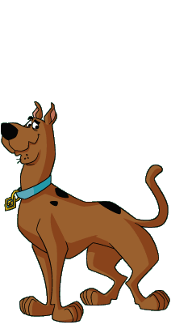
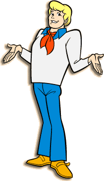
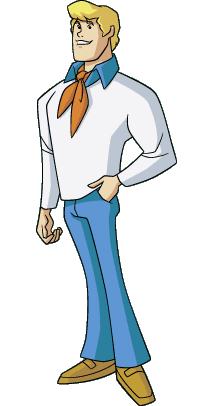
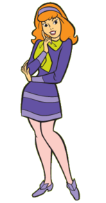
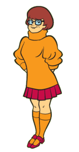

Mystery Incorporated
Then

Scoobert "Scooby" Doo is the pet and best friend of Shaggy Rogers. Scooby is a brown Great Dane with black spots. Scooby almost never leaves Shaggy's side while solving mysteries. When the gang spilt's up to serach for clues Scooby and Shaggy often go in search for food instead and end up finding a monster. Scooby is the mascot for Mystery Inc. and is never left out. If everyone is scuba diving so is Scooby.They often need sneak him into the places they are investigating. For a big dog he is a sort of a fraidy cat but always can must up some courage for a scooby snack.
Special Skills:
- Can talk
- Good at attracting monsters
- Can sniff for clues
- Excellent actor
- A master at hiding...sometimes
Voiced By:
- Don Messick
- Don Messick was the original voice actor for Scooby and set the voice patterns for him. Messick provided the voice for Scooby for all the varied series up to 1996 when he had a stroke and retired from voiced acting.
- Scott Innes
- Scott Innes took over when his friend Don Messick became sick. Innes continued to voice Scooby and Shaggy from the early 90's to the early 2000's
- Frank Welker
- Frank Welker is the main voice actor for Fred but when the new series for Scooby Doo in 2002 (What's New Scooby Doo) he took over. Welker is the current voice for Scooby in the latest series "Scooby Doo: Mystery Incorporated".
- Neil Fanning
- Neil Fanning provided the voice for scooby in the live action moives.
Now
Then

Norville "Shaggy" Rogers wears green t-shirt and burgundy bell bottoms with black shoes. He is the owner and best friend of Scooby Doo. Shaggy is depicted as a slacker, but he isn't a slacker when it comes to food and mysteries. He may be a bit of a chicken, but he always follows through when it comes to his friends.
Special Skills:
- Good at attracting monsters
- Is a ventriloquist and can do impressions
- Has gymnastics skills and ran track
- Great with disguises
- Casey Kasem
- Kasem is the original voice for Shaggy and he voiced Shaggy until 1995 because he did not like the way Shaggy was being written. Although he came back fro "What's New Scooby Doo" inthe early 2000's
- Scott Innes
- Innes voiced Shaggy and Scooby from the early 90's into the early 2000's
- Billy West
- West's time as Shaggy was shared with Scott Innes in early 90's into the early 2000's
- Matthew Lillard
- Matthew Lillard is the current voice for Shaggy and was picked because of his role as Shaggy is the Live action films.I'm pretty sure he was born to play Shaggy.
Voiced By:
Now

Then
Fredrick Herman Jones or Fred wears a long sleeve white shirt over a blue collared shirt and blue slacks with brown monk boots. Around his neck wears an orange ascot in almost every series. Fred is the unofficial leader of Mystery Incorporated. He embodies all the necessary qualities of a good leader. He is strong, assertive and confident. Fred divides up the gang into to teams and usually is with Daphne and Velma in these situations. In recent series Fred is handy with traps!
Special Skills:
- An expert on traps
- Can lift members of the gang through window
- Can always fix the mystery machine
Voiced By:
- Frank Welker
- Welker has played the voice of Fred Jones since the begininng of the show, including every spin of except "A Pup Named Scooby Doo"
- Carl Steven
- Steven was Fred's voice in "A Pup Named Scooby Doo" to give Fred a younger voice.
- Freddie Prinze Jr.
- Prinze didn't really voice Fred but he portrayed him in the live-action films
Now
Then
Daphne Blake is the fashionista of the group. She wears a purple dress with pink tight and purple shoes to match her dress. For her accessories she wear a purple headband and a bright green scarf. Many think that Daphne is a useless member of the group. This however is not true. She often helps Velma with research and she is quite adept at disguises. In later versions of Scooby Doo they hint that Daphne learned several types of martial arts, hoping to shake the "danger prone Daphne" nickname and to not get captured so much.
Special Skills:
- Has a black belt
- Can drive a motorcycle and surf
- Can Macgyver locks
Voiced By:
- Indira Stefanianna Christopherson
- Christopherson ws the original voice of Daphne but didn't finished the series "Scooby Doo Where Are You?" and quit in 1970.
- Heather North
- North came on to finish the series when Christopherson quit in 1970 and was Daphne's voice until 1988.
- Kellie Martin
- Martin was Daphne's voice only for "A Pup Named Scooby Doo" from 1988-1991.
- Mary Kay Bergman
- Bergaman wasn't around very long just from 1998 to 2000
- Grey DeLisle
- DeLisle came on in 2001 and is the current voice of Daphne.
- Sarah Michelle Gellar
- Gellar was the actress in the live action films.
Now

Then
Velma Dinkley is the main brains behind Mystery Inc. She has short brown hair and wears glasses to help with her terrible vision. Velma is usually seen in an orange sweater with matching knee high socks, and a maroon pleated skirt with matching shoes. Velma is quite outspoken except when romance is involved. She is always curious and is eager to learn about the world around her, but stays sceptical. She is rarely fooled and usually figures out who is behind the mask before the others.
Special Skills:
- Can decrypt cyphers
- Knows her way around computers
- Good at connecting clues
- Is surprisingly strong
Voiced By:
- Nicole Jaffe
- Jaffe is the original voice of Velma and stayed on til 1974
- Patricia Stevens
- Stevens took over for Jaffe and played through all the series until 1980.
- Christina Lange
- Lange was Velma voice in 1988-1991 for "A Pup Named Scooby Doo".
- B.J Ward
- Ward voice Velma for the direct to video movies in 1997-2002.
- Mindy Cohn
- Cohn(the former "Facts of Life" star)took the reigns of Velma's voice in 2003 and is the current voice of Velma.
- Bets Malone
- Malones was Velma singing voice in "Scooby Doo!Music of the Vampire".
- Linda Cardellini
- Cardellini played Velma in the live action films.
Now

sources:
- http://scdvtr.blogspot.com/2013/01/download-de-series.html
- http://scoobydoo.wikia.com/wiki/
- My Brain
- http://scdvtr.blogspot.com/2013/01/download-de-series.html
- http://scoobydoo.wikia.com/wiki/
- My Brain